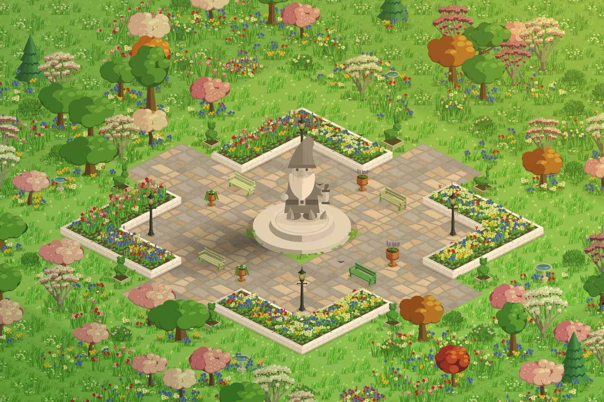

How StepHaven turns your steps into a town
Most step counters show you a number. StepHaven shows you a little town that only exists because you went outside.

StepHaven is a cozy town-building game for iPhone. You don't tap to earn coins or wait out a timer. You walk. Every step you take becomes a point, and you spend those points on cottages, trees, flower beds, ponds, railways and boats.
Nothing to start or track
Your iPhone already counts your steps, and so does an Apple Watch if you wear one. StepHaven reads that count from Apple Health. There's no workout to start and no button to press before you head out. Go to work, walk the dog, wander round the shops, then open the app and your steps are waiting.
Points count from midnight on the day you install, so you'll usually have something to spend the first time you open it. New players also get a welcome kit of about sixty pieces to start a town with.
What a walk buys
Prices are set by how much walking things are worth, not by what we could charge for them. As a rough guide, at about a hundred steps a minute:
| Walk | Steps | What it's like to spend |
|---|---|---|
| Around the house | ~500 | A bench, a lantern and a flower bed |
| A 15-minute walk | ~1,500 | A small house with a garden round it |
| Half an hour | ~3,000 | A few cottages and the lane between them |
| An hour out | ~6,000 | A whole street, trees and all |
| A big hike | 12,000+ | Saving toward a landmark |
A garden bench costs about 60 steps, an oak tree a little over 100, and a small house you design yourself a few hundred. A normal day on your feet builds a street. The shop has a walk guide built in, so you can always see how far away the thing you want is.

Steps can't be bought
This is the one rule we never bend. There's no way to buy steps or points with money, and there are no ads. Everything standing in your town was paid for by walking.
StepHaven is free to play. StepHaven+ is an optional membership that adds more house shapes and styles in the Workshop and lets you keep as many towns as you like, and themed packs such as Cottage Garden unlock new sets of things to build. Even then, those items still cost steps to place. Money opens up more choices. Your steps still pay for what you build.
Your step count stays on your phone. StepHaven reads it from Apple Health to work out your points, and that's all. It isn't sent to us or to anyone else. Steps typed into the Health app by hand don't count either, so the town stays honest.
A town that lives without you
Once there are houses, villagers move in. They walk the lanes, visit the shops, sit on benches and head home when the lights come on. If your town has enough green in it, deer, foxes, rabbits and ducks start to visit, and sometimes they leave a present behind.
The lighting follows your phone's clock, so you'll see dawn, a golden afternoon and a town full of lit windows at night. The seasons change through the year too, with spring blossom, autumn leaves and snow on the roofs in winter.

Little reasons to go outside
- A present every day. One gift waits by the town flag each day. The more you walked yesterday, the better your odds of a good one.
- Levels. Walking earns experience as well as points. New levels unlock rewards in the shop, from a signpost that names your other towns to a golden boot that shows how far you've walked.
- Saving for something. If you can't afford what you tapped, StepHaven remembers it and lets you know when you've walked enough.
Build it your way
Paint the ground, raise hills, dig ponds and run a creek down a waterfall. Design your own houses in the Workshop, picking the shape, roof, colours and details. Lay a railway and watch a steam train pull into the station. Or start a shared town and build it with friends.
The town is yours. The walking is what makes it.
StepHaven: Cozy Town Builder
Free on iPhone. No ads, and your steps stay on your phone.
Download on theApp Store